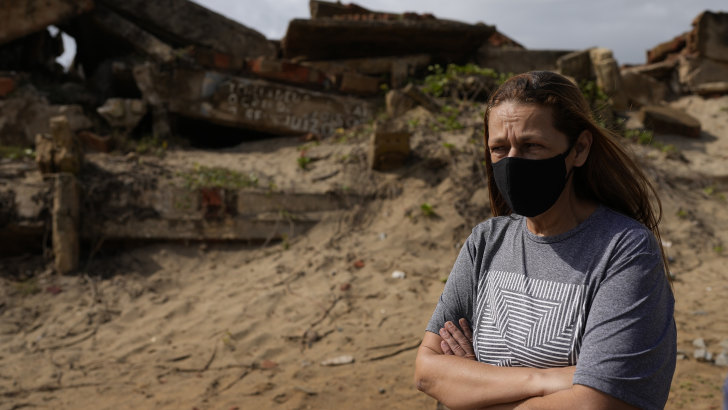
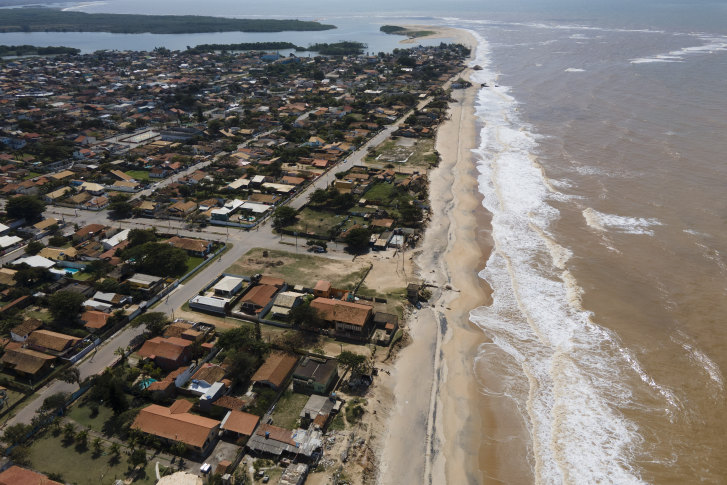

‘The sea swallowed everything’: this Brazilian town is drowning
By Diarlei Rodrigues and Marcelo Silva de Sousa
Sao Joao da Barra: Decades ago, Julia Maria de Assis thought someday she would take over the hotel her father had begun building in Atafona, a seaside district in Brazil’s northern Rio de Janeiro state.
But the very attraction that drew the tourists to Atafona – the sea – became its foe. Advancing water put the hotel’s construction on hold until the ocean’s force finally tore it down. Almost 500 other buildings have succumbed in the last 13 years, too.
“It was going to be 48 suites – a big hotel that never started operations,” said Assis, 51, standing beside rubble that once composed her family’s dream. “Even though the hotel’s structure was strong, every time the waves hit the building they damaged it and, finally, it collapsed.”
As a result of human action, over the past half century the Atlantic Ocean has been relentlessly consuming Atafona, part of the Sao Joao da Barra municipality that is 250 kilometres from Rio de Janeiro’s capital and home to 36,000 people. Due to climate change, there is little hope for a solution. Instead, Atafona will slip into the sea.
“Sometimes the water comes up to my knees. My biggest fear is that one day it will take my hut,” fisherwoman Vanesa Gomes Barreto, 35, said at the stall where she sells her catch. “There was a chapel here, a bakery. It was a very large city, of which only a piece remains. The sea swallowed everything, even my childhood.”
The Paraiba do Sul River, which originates in neighbouring Sao Paulo state, brings sediment and sand to Atafona where it empties into the Atlantic Ocean. Its flow was mostly diverted in the 1950s to provide water to the growing capital Sao Paulo, which weakened Atafona’s natural barrier to the ocean, said Pedro de Araujo, materials technology professor at the Fluminense Federal Institute.
“Less land sediment and sand that stabilised the coast made it so the sea is eating away at the city,” said Araujo, who is pursuing a doctorate analysing river erosion and seeking to model what that will mean for its delta going forward. He estimates that the river has one-third of its original flow.
Deforestation of mangroves in recent decades also left Atafona more vulnerable, said Araujo. The sea’s average position moves some five meters inland every year, according to the professor.
Specialists have evaluated possible solutions, such as construction of artificial barriers or depositing vast quantities of sand, but none appear effective enough to halt the ocean’s advance. Global sea level rise due to melting ice means destruction will continue, and at a faster rate, Araujo said.
Specialists have evaluated possible solutions, such as construction of artificial barriers or depositing vast quantities of sand, but none appear effective enough to halt the ocean’s advance. Global sea level rise due to melting ice means destruction will continue, and at a faster rate, Araujo said.
People often ask Assis, who thought she would inherit a hotel, if her city’s reversal of fortunes saddens her. She says she is grateful she was born in Atafona, but that humans need to respect nature.
“I feel nostalgic for the house where I spent summers,” she said, and pointed to the sea. “It’s at the bottom of the Atlantic Ocean.”
AP